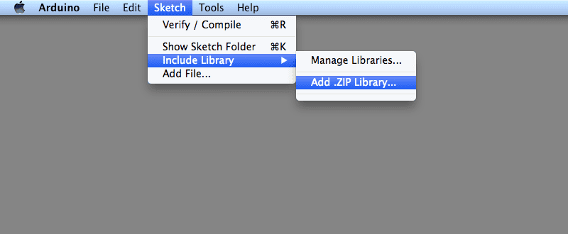

What is Stepdance?
Stepdance is a framework for creative motion control. Stepdance is:
- Real-time: Control motors with essentially zero latency using a variety of inputs such as potentiometers and encoders.
- Modular: Stepdance programs can be composed of software modules, and physical stepdance boards can be chained together.
- Hybrid: Blend real-time inputs and manipulation with traditional pre-planned approaches such as G-code.
Getting Started
To get started with Stepdance:
- Set up your hardware: Build or acquire a Stepdance module (Driver Module or Basic Module). See Hardware Documentation for details on board specifications and pinouts.
- Set Up Arduino Programming Environment: Add the Stepdance library to your Arduino IDE or PlatformIO environment. The library is compatible with Teensy 4.0 and 4.1 microcontrollers. You currently need to install the library as a .zip.
Download the Stepdance zip file here

In the Arduino IDE, navigate to Sketch > Include Library > Add .ZIP Library. At the top of the drop down list, select the option to Add .ZIP Library.
You will be prompted to select the library you would like to add. Navigate to the .zip file's location and open it. Further details can be found on the Arduino Docs.
- Understand the core concepts:
- BlockPorts: The fundamental communication mechanism between components. They route data between different parts of your system.
- Channels: Manage position state and generate step/direction signals for motors.
- Output Ports: Physical hardware interface that sends motion signals to stepper drivers.
- Input Ports: Read signals from encoders, potentiometers, and other sensors.
- Try the examples: Start with simple examples like reading an encoder or controlling a single axis, then progress to more complex applications. See the SSL Documentation for programming guides.
- Explore the API: Browse the module documentation to understand available generators, filters, kinematics, and interfaces for building your motion control application.
Hardware Documentation
For detailed information about Stepdance hardware modules, ports, and specifications, see the Hardware Documentation.
Stepdance Software Library (SSL) Documentation
For detailed information about programming Stepdance hardware modules, see the SSL Documentation.
 1.14.0
1.14.0